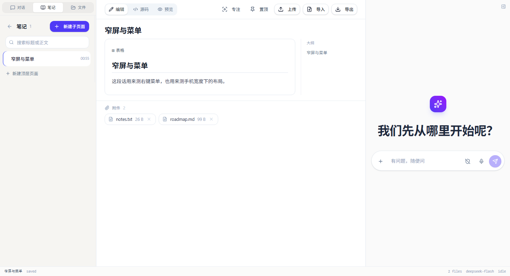
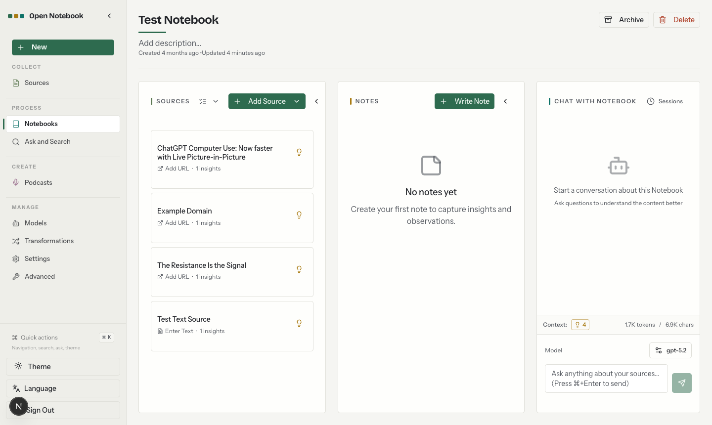
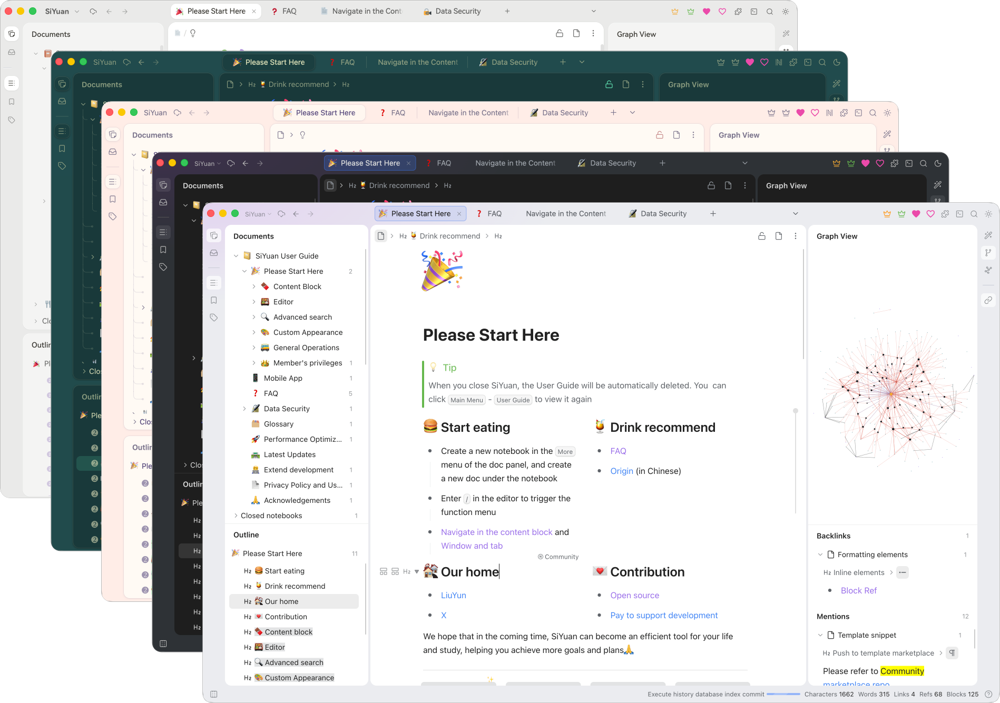
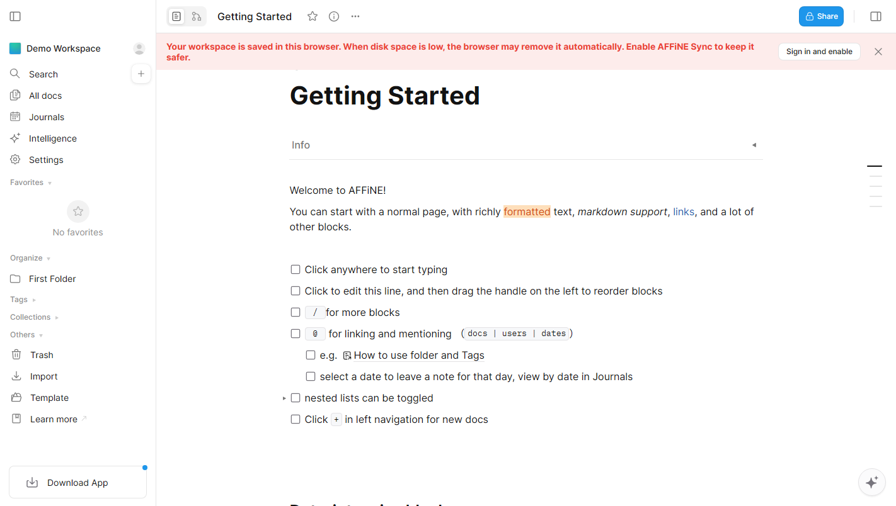

Wisora · 工作台改版
四套可选的界面范式，你挑一个
下面每个方案都是真实项目的界面（我自己截的图，不是宣传插画），
每个都写清「左中右分别是什么」「AI 从哪进」「要改我们的多少代码」。
我的推荐：A 的信息架构 + 现在这三栏骨架。
理由是 A 是唯一把「当前上下文」当成一等公民的：它明确告诉你「这段对话基于哪几份资料」。
我们现在右栏只是一个聊天框，用户永远不确定 AI 看没看到这篇笔记。代价是要把中栏再分出一列，编辑宽度会窄 200px 左右。
看完告诉我字母（A / B / C / D），或者说「A 的顶栏 + D 的选区菜单」这种组合也行。
基线现在这版是什么
左（对话 / 笔记 / 文件切换）· 中（笔记编辑）· 右（Agent 对话）· 底（状态栏）。这是最接近 VS Code 的排法。

当前实现（1440 宽，笔记态）。截图由我在本机实际运行截取。
- 左栏
- 三个 tab 切「会话 / 笔记树 / 工作区文件」，起资源管理器作用
- 中栏
- 笔记编辑器；点文件时切成只读预览
- AI 入口
- 右栏常驻对话 + 编辑器里选中文字右键（解释 / 总结 / 改写 / 复制引用）
- 视觉
- 暖白纸感、细边框、等宽小字、无卡片阴影
- 问题
- 右栏不知道自己「在看什么」：除了刚才引用过一次，用户无法确认上下文范围
A三栏合一：源 / 笔记 / 对话并排
最贴合需求
改造量：中
参考 open-notebook（GitHub 41.9k★，NotebookLM 的开源实现）。

左：全局导航（Sources / Notebooks / Ask and Search / Podcasts）。中：三列并排「SOURCES 资料 → NOTES 笔记 → CHAT 对话」。
右列对话底部有 Context 4 徽标与 token 用量。
来源：lfnovo/open-notebook
- 左栏
- 全局导航（不是笔记树），当前笔记本的入口
- 中栏
- 再分两列：资料卡列表 + 笔记正文
- AI 入口
- 右列常驻对话，顶部标明「基于哪几份资料」，可增删上下文
- 能借
- 上下文徽标与 token 计数、资料卡样式、分区标题（SOURCES/NOTES）
- 代价
- 中栏宽度被切成两半；编辑区在 1440 宽下只剩 ~560px，比现在窄 300px
落到我们这版怎么改：中栏左侧加一条可折叠的「本文档的片段 / 附件」列；
右栏对话顶部加一行「上下文：本文档 · 3 段引用」的可点徽标。选中文本改为追加到上下文而不是一次性粘贴。
B文档树 + 右侧多面板（大纲 / 反链 / AI）
最稳
改造量：小
参考 思源笔记 siyuan（GitHub 47.2k★，中文、隐私优先，功能已经是「人与智能体协作」）。

官方产品图是多窗口叠放，看中间那层：左文档树、中编辑区带顶部文档 tab、右「大纲 / 反链 / 图谱」。
来源：siyuan-note/siyuan
- 左栏
- 纯文档树（层级、置顶、搜索）
- 中栏
- 编辑区，顶部有打开过的文档 tab
- 右栏
- 可切换的面板：大纲 / 反链 / 关系图 /（AI）
- 能借
- 右栏做成面板栈、「大纲 + 反链」这类结构化侧栏（我们已有反链数据）
- 代价
- AI 不是常驻的，需要点面板切过去；「选中即问」的动线比现在长
落到我们这版怎么改：右栏顶上加深色小 tab「AI / 大纲 / 反链」，AI 只是其中一个面板。
好处是笔记的结构化信息终于有地方放；坏处是对话被折叠，不太符合「AI 常驻」的诉求。
C左导航 + 悬浮 AI 圆钮
最轻
改造量：小
参考 AFFiNE（GitHub 74.5k★，Notion + Miro 的开源替代）。

我用它公开的 Demo Workspace 截的：左栏 Search / All docs / Journals / Intelligence / Settings，
中栏文档，右下角悬浮 AI 圆钮。
来源：toeverything/AFFiNE · app.affine.pro
- 左栏
- 全局导航 + 组织（标签、集合、回收站）
- 中栏
- 文档铺满，右边不留常驻栏
- AI 入口
- 右下悬浮球 / 左栏 Intelligence 页，不占常驻宽度
- 能借
- 把 Intelligence 提成一级入口；编辑区能拿到最大宽度
- 代价
- 对话变成「要用才开」，跟你「AI 与笔记在同一屏」的诉求相反
这个方案我不建议单独用，但它有个细节值得抄：左栏把「Search」单独放在最上面，
我们现在是塞在笔记树里的小输入框。
D布局不动，把 AI 做进选区（内联）
体验最深
改造量：大
参考 BlockNote xl-ai（TypeCellOS/BlockNote）与 novel（16.5k★）。它们的共同点是：AI 的产出以结构化改动回到文档，而不是一段聊天文本。
xl-ai 的核心结构（仓库内实测路径）
packages/xl-ai/
├─ streamTool/ AI 通过工具调用改块
├─ api/formats/ json / html / markdown 三套
└─ api/promptHelpers/ 选区与光标位置注入
- 布局
- 不变（它是个编辑器库，不带页面布局）
- AI 入口
- 选中文字 → 浮动菜单 → 动作；结果直接替换/插入选区
- 能借
- 我们已经有「选中右键 → 改写 → 应用到选区」，方向一致
- 代价
- 要支持跨块改写（现在置灰），得先解决「结构怎么合并」
它不是布局方案，是增强件。可以叠加在 A/B/C 任一方案上。
如果你要的是「AI 真的会改我的文档」，这条比换布局更重要。
对比一张表看完
「改造量」按我们的代码算：小 = 只动 pages/workbench；中 = 还要动布局与状态；大 = 要改数据流与编辑器。
| 方案 | 左栏 | 中栏 | AI 在哪 | 改造量 | 最像谁 |
| 基线 | 对话/笔记/文件 tab | 笔记 / 文件预览 | 右栏常驻 + 选区菜单 | 已实现 | VS Code |
| A | 全局导航 | 资料列 + 笔记 | 右列对话 + 上下文徽标 | 中 | NotebookLM |
| B | 文档树 | 编辑（带 tab） | 右栏可切换面板之一 | 小 | 思源 / Obsidian |
| C | 全局导航 | 文档铺满 | 悬浮球 / 独立页 | 小 | AFFiNE |
| D | 不改布局，只把 AI 做进选区与文档改动 | 大 | BlockNote / novel |
落地如果选 A，我会这么改
三步，每步都能单独验收，不会做一半不能看。
-
右栏加「上下文」条
对话顶部一行：`上下文 · 本文档《周报 W45》 · 3 段`，点开能看/删掉每一段。数据复用我们已有的
ctxId 暂存机制，只是从「一次性」改成「会话内累积」。
-
中栏加可折叠的「资料 / 片段」列
默认 220px，可折叠成一条竖线。里面是当前笔记的附件 + 被引用过的片段。折叠时编辑区恢复到现在的宽度。
-
选中文本从「一次性发问」改成「加入上下文」
右键菜单加一项「加入对话上下文」，选中的段落进入第 1 步那个列表，可以连续选几段再一起问。这也是 NotebookLM 最核心的交互。
风险先讲：第 2 步会让编辑区变窄。1440 屏下中间三列分别是 220 / 560 / 420，
560px 写 Markdown 是够的（约 55 个汉字一行），但比现在（867px）明显窄。
如果不能接受，A 就退化成「右栏上下文徽标」这一个改动（只做第 1 步）。